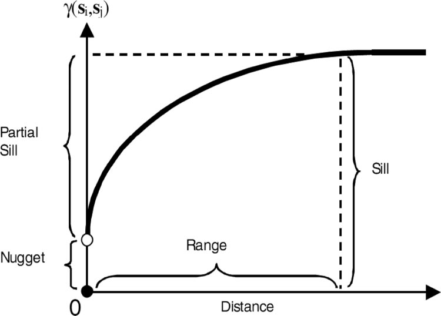
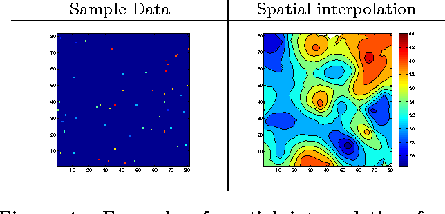
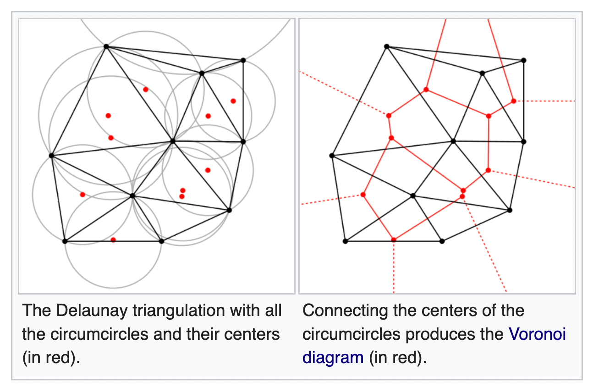

Spatial Point Processes
When to Use
when wanting to model and/or interpolate data that occur in space
Key Points
Stationary: data that has properties that are invariant under translation
Istropic: data that has properties that are invariant under rotation
Complete Spatial Randomness: points have equal probability of appearing anywhere; smells like Poisson
Nearest-Neighbor Distribution: probability event is between r and dr
= (probability of O counts in πr2) x (probability of 1 count in 2πdr)
Techniques
Kriging:
used for interpolation on data that is in few places and is not uniformly distributed
Semi-Variogram: describes spatial connectiveness of data; gives the weighting for kriging (can be negative)
weights based on correlation: γ(h) = σ2 - cov(z(x),z(x+h))
sill: total variance of the data
nugget: small-scale variability
range: distance where pairs of points are no longer spatially correlated
Simple Kriging: know constant mean over sample and known variogram
Ordinary Kriging: unkown constant mean but known variogram
Delaunay Triangulation:
joins all neighboring triplets of points with triangles
Minimal Spanning Tree: network of line segments that connects all points having the smallest total length
Circumcircles: circle that entirely encloses its associated triangle that has data point as center;
skinny triangles produce larger circumcircles than robust triangles of a similar size
Dirichlet/Voronoi Tessellation:
based on line bisectors perpendicular to the line segments from Delaunay Triangulation
paritions space into polygons around seed points (data)
turns a heterogeneous map into a smoothed image
